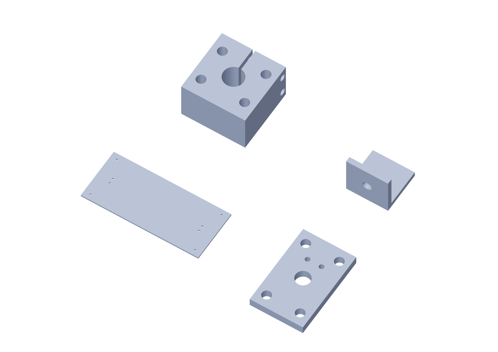

Preparation / metal29 / 179
Prepare the metal blanks
Finished blank sizes are in the metal inventory. Drill holes from the actual-size template and transfer the catalog mounting patterns called out by the part.
Add6061 plate blanks · metal angle blanks
Tools / setupSaw · square · caliper · file · templates at 100%

- Cut and label every blank by its part ID; deburr both faces and all edges.
- Print the required template tiles at actual size and measure each 50 mm check bar.
- Align the red registration crosses, tape the tiles and center-punch the hole centers.
- Clamp the stock at the drill press. Drill the stated diameters; finish slots and windows to the template.
Ready when
Every 50 mm scale bar is within ±0.25 mm, finished blanks within ±0.5 mm and registered hole centers within ±0.25 mm; mating faces are deburred. A scaled template moves every hole. Correct the print setting and use a new template before drilling the blank.